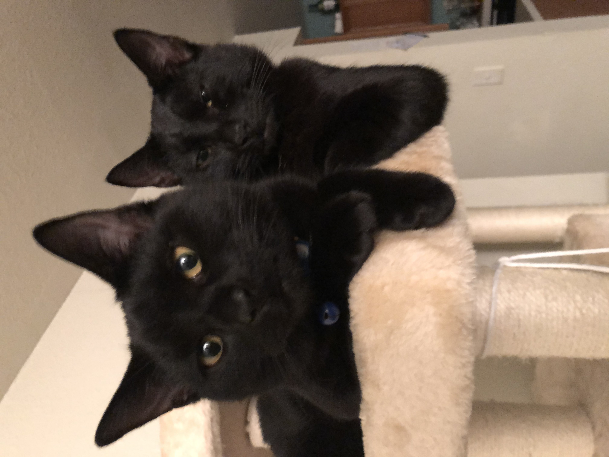

Kip & Lennie!
Austin & Mac's Cats!
KIP & LENNIE are the best cats ever. Probably Purebred but most likely mixed. Who knows! They are dark, midnight black cats who are brothers and were adopted by yours truly: Austin, and my friend Mac! 「私はオスタン。よろしくお願いしますよう！」

- They are one year old.
- They appear to be twins.
- Kip's ex-owner is Austin.
- Lennie's ex-owner is Mac.
Facts:
Look how cute Kip is!

Each Cat's Personality
Fun fact: He's missing the tip of his tail.
Let's try some code!
def _feed_cats():
meow_mix = Food(cat_food)
kip = Cat(black, Austin, yrs=1)
lennie = Cat(black, Mac, yrs=1)
if kip.isHungry and lennie.isHungry:
kip.feed(meow_mix)
lennie.feed(meow_mix)
else:
print("It's not time to feed you guys yet!")